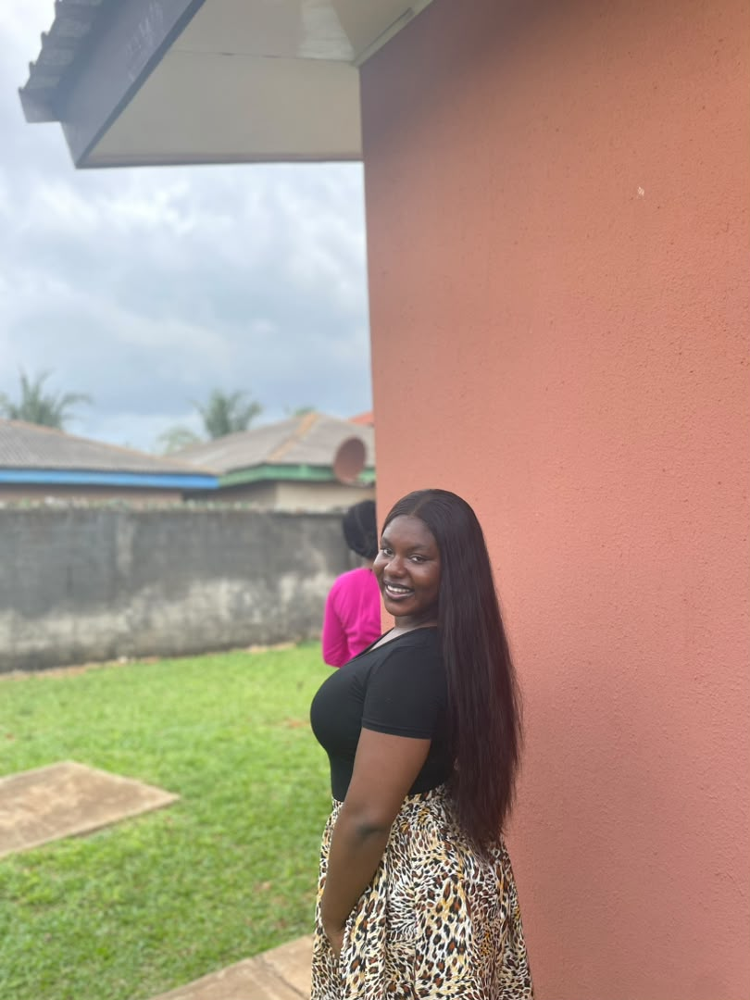

PICTURES AND VIDEOS OF LYDIA
Lydia is a beautiful girl and has a good sense of fashion. She loves taking pictures. Here are some memories captured along the way.
A little glimpse into my world ❤️

Hello! Welcome to my little corner of the internet. My name is Lydia, and this website is all about me, my interests, ambitions, business and the little things that make's my life interesting.
Get comfortable, explore and get to know me!
GET TO KNOW LYDIALydia is a full-grown adult (argue with your keyboard). Lydia is 5 feet 5 inches tall and weighs 75kg.
She is one of six children (five girls and one boy), a daughter, a student, a Christian and one of Jehovah's Witnesses. She is also a regular pioneer and a construction servant if you know you know ball.
When Lydia is not studying, she is probably on her phone. If she isn't on her phone, she is reading, cooking or out for field service.
Lydia can cook to an extent; after all, she is not a chef so do not expect no perfection. She loves to eat, so it is only natural that she learns how to cook. Lydia loves to travel, but unfortunately, she hasn't explored as many places as she would love to. She has visited Benin City, Ibadan, Lagos and Ogun State in Nigeria. Currently, Lydia is interested in studying Law. She is also learning programming, with a particular interest in web development.
Here are some things Lydia enjoys doing:
I believe learning never stops. I am constantly working on improving myself and developing new skills.
My goal is to become a skilled programmer and to study law.
Apart from my personal interests, I am also a BUSINESS OWNER!
OCEAN'S WHISPER is my lip-care brand. It is built around helping people care for and appreciate their lips. Building a business has been an interesting journey,and I look forward to growing the brand. I currentlyy make lip care products such as lip scrubs, lip balms, lip sticks and lip glosses. I am also working on expanding the product line to include other lipcare products and maybe some day soon skincare products that actually work and we do not have to break the bank.
Welcome to the world of OCEAN'S WHISPER!
Lydia is a beautiful girl and has a good sense of fashion. She loves taking pictures. Here are some memories captured along the way.
Thank you for taking the time to explore my website. I hope you enjoyed getting to know a little more about me.
Feel free to connect with me through my social media platforms to know more about who Lydia is.
SEND ME AN EMAIL